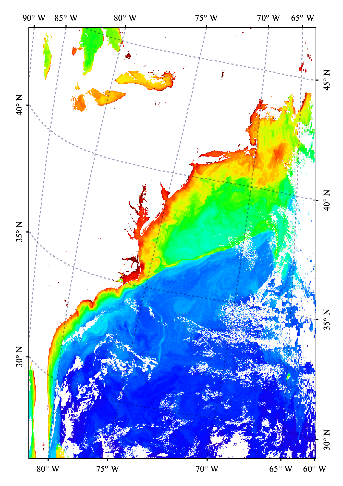

| Map Gridlines Overlay (Graticules) | |
The Map Gridlines Overlay tool creates a map gridlines layer over the selected band's Image View. This layer can include gridlines, coordinate labels, a border. Parameters of the Map Gridlines Layer are editable in the Layer Editor as well as in the Preferences

Image 1: Map Gridlines Layer shown over a MODIS Aqua level-2 scene image
Layer Toggle - The Map Gridlines layer is toggled on and off via the Map Gridlines icon in the Overlay toolbar
or
Layer->Map Gridlines Overlay within the menu system. Initially the Map Gridlines layer does not exist, but is
created during the first
instance of the Map Gridlines layer being toggled on. Default settings are applied when the Map Gridlines layer is
created.
Layer Editor - Subsequent to the creation of the Map Gridlines layer, any of the properties such as font size,
line spacing, etc., may
be edited by using the Layer Editor. This editor is accessed by opening the Layer Manager, clicking on
the word
Map Gridlines (this selects the layer as the active layer), and then either clicking of the pencil icon within
the
Layer Manager or selecting Layer->Layer Editor from within the menu system.
Preferences Editor - To edit the default values of the Map Gridlines layer properties go to
Tools->Options->Layer->Map Gridlines Layer. (see Options
Dialog)
These fields govern how many grid lines get created and their major and minor spacing.
• Latitude Spacing:
Spacing between latitude gridlines (in degrees).
◦ Note: Setting this field to zero results in auto-spacing (uses the field "Number of Gridlines").
Lines are placed at the nearest "rounded" degree value.
• Longitude Spacing:
Spacing between longitude gridlines (in degrees).
◦ Note: Setting this field to zero results in auto-spacing (uses the field "Number of Gridlines").
Lines are placed at the nearest "rounded" degree value.
• Number of Gridlines (auto-spacing):
Spacing used when "Latitude Spacing" and/or "Longitude Spacing" set to zero.
◦ Note: If both "Latitude Spacing" and "Longitude Spacing" are being set, spacing is in set to be the same on both axis.
• Minor Steps Between Gridlines:
Number of points being drawn (anchored to) between the major gridlines.
Configuration options for the labels: isibility, placement, and text-formatting of the map gridlines labels associated which indicate geographic position.
• Labels Rotation (Latitude):
Rotate latitude labels (0 degrees = perpendicular).
• Labels Rotation (Longitude):
Rotate longitude labels (0 degrees = perpendicular).
• Labels Suffix (N,S,W,E):
Format label text with suffix (N,S,W,E) instead of (+/-).
• Labels Decimal Value:
Format label text with decimal value instead of degrees/minutes/seconds.
• Show North Labels:
Displays north (top axis) labels.
• Show South Labels:
Displays south (bottom axis) labels.
• Show West Labels:
Displays west (left axis) labels.
• Show East Labels:
Displays east (right axis) labels.
• Show North Corner Labels:
Display north corner labels.
• Show South Corner Labels:
Display south corner labels.
• Show West Corner Labels:
Display west corner labels.
• Show East Corner Labels:
Display east corner labels.
• Put Labels Inside:
Put labels inside of the data image (also see backdrop options below).
Configuration options for the labels: font-formatting of the map gridlines labels associated which indicate geographic position.
• Labels Font Size:
Set size of the label text.
• Labels Font Color:
Set color of the label text.
• Label Font Type:
Set the text font of the labels.
• Labels Font Italic:
Format label text font in italic.
• Labels Font Bold:
Format label text font in bold.
Configuration options for the gridlines.
• Show:
Display gridlines.
• Gridline Width:
Set the width of the gridlines.
• Gridline Dash Length:
Set dash length of gridlines or set to solid gridlines (0=SOLID).
• Gridline Transparency:
Set the transparency of the gridlines.
• Gridline Color:
Set the color of the gridlines.
Configuration options for the image border.
• Show:
Display image border.
• Border Width:
Set the width of the border.
• Border Color:
Set the color of the border.
Configuration options for the label tickmarks.
• Show:
Display tickmarks.
• Put Tickmarks Inside:
Place tickmarks on the inside of the data image.
• Tickmarks Length:
Set the length of the tickmarks.
• Tickmarks Color:
Set the color of the tickmarks.
Configuration options for backdrop of labels placed on the inside of the image.
• Labels Backdrop Transparency:
Set transparency of the backdrop of the inside labels.
• Labels Backdrop Color:
Set the color of the backdrop of the inside labels.
Note: Font Sizing - The user font size property is in term of "approximated" points rather than pixels. This enables a sensible default font size setting which will work well with files of any resolution. Internally the font sizes are actually tied to the pixel sizes and there is a conversion of points to pixels being made.
Note: Small Images - For extremely small files (less than about 100 pixels in one dimension) you may likely see problems with the map gridlines, such as missing labels. This is because there is not enough pixels on the image to generate the font. A workaround to this would be to reproject the low resolution image to a much higher resolution image using nearest neighbor sampling. This will effectively give the appearance and shape of the original low resolution pixels while using a high resolution raster grid.
Pitfall: Blurry Text Labels - Scene images are exported using a raster file format (png, gif, etc.). This means that any text overlayed on the image such as the map gridlines labels and other text annotations will also be rasterized. In order to maintain the appearance of sharp text labels you may need to increase the image dimension of the file to be exported. This can be done within the Export Image tool.
Pitfall: No Labels because they are Outside of View Window - When labels are placed outside of the image border this will also likely place them outside of the view window, in which case so you will need to zoom out to see them. When you export the image using the Export Image tool, you will need to specify "View region" and not "Full scene" as the Image Region.
Issue: Image Orientation - The logic of the current map gridlines tool assumes that north is at the top of the image, and west is to the left of the image. For any images which do not conform to this orientation, the map gridlines labels may fail to display.
Issue: Projection - Certain projections such as polar projections may fail to display map gridlines.